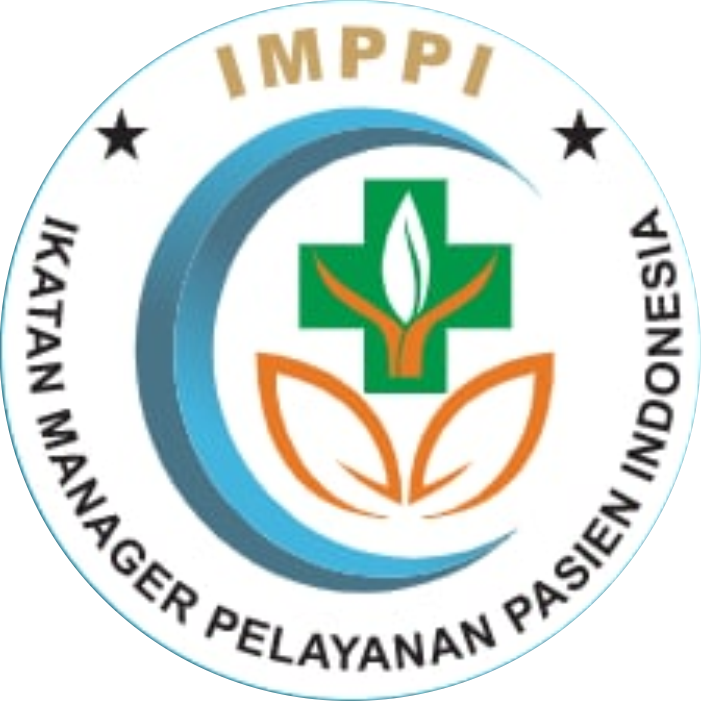

Beranda
Tentang Kami
Visi & Misi
Tujuan
Kontak
Struktur Pengurus
Dewan Pembina
Dewan Pakar
Majelis KEDM
Pengurus Eksekutif pusat
Berita
Agenda
Unduhan
MAJELIS KEHORMATAN ETIK DAN DISIPLIN MPP
Ketua merangkap Anggota : Dr. Rita Sekarsari, S.Kp., Sp.KV., MHSM.
Anggota : dr. Eka Viora, Sp.KJ.
Anggota : Assoc. Prof. Dr. Arwani, SKM., BM.Hons., MN.